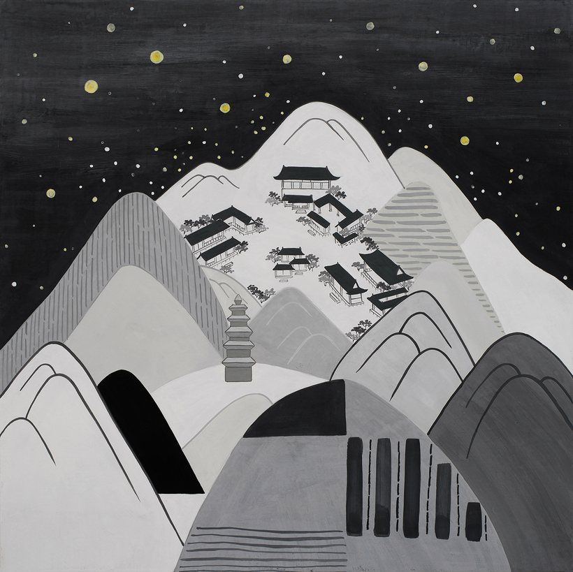
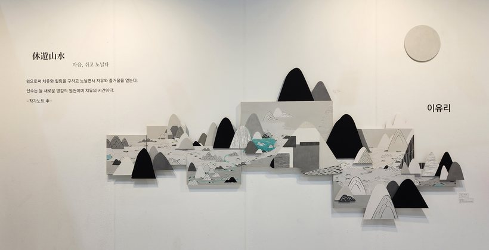
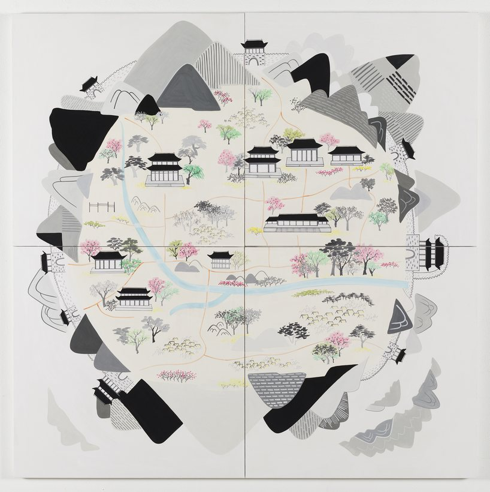
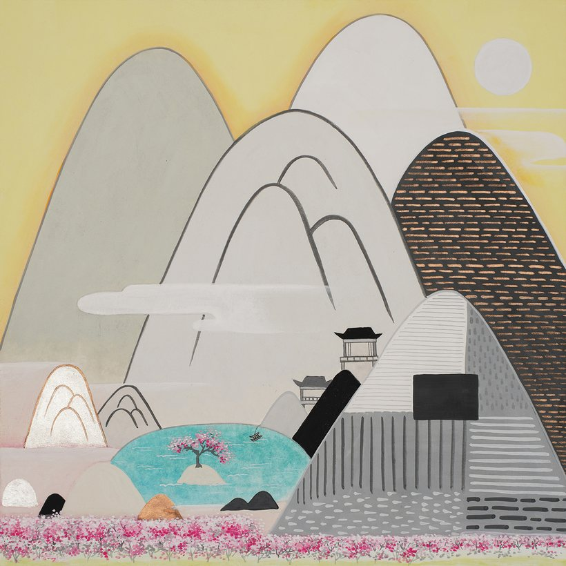
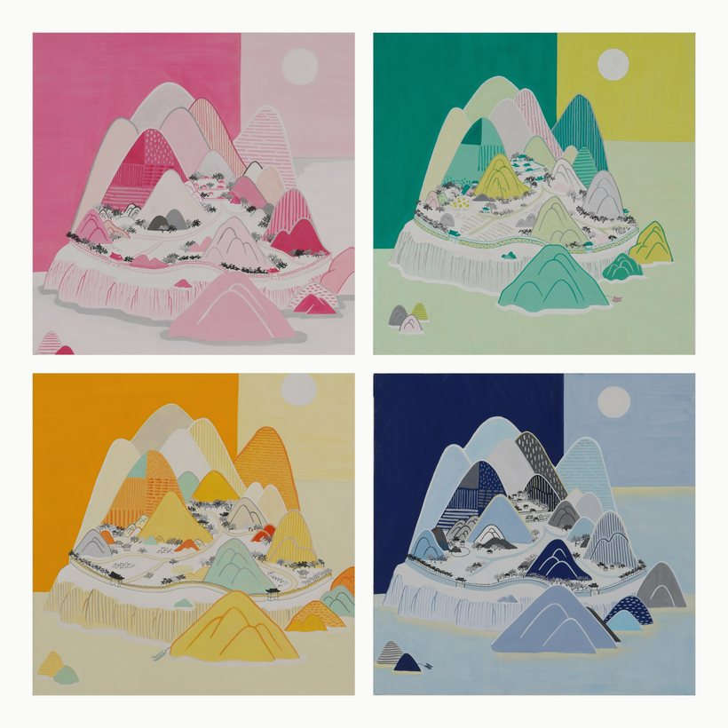
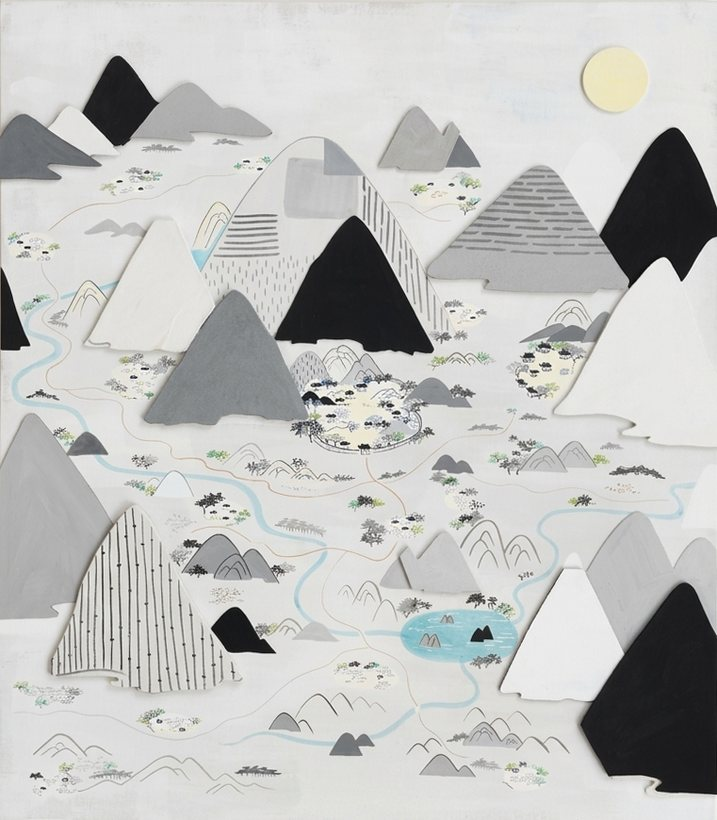
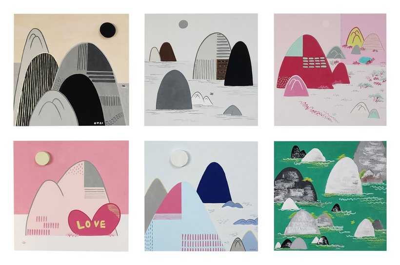
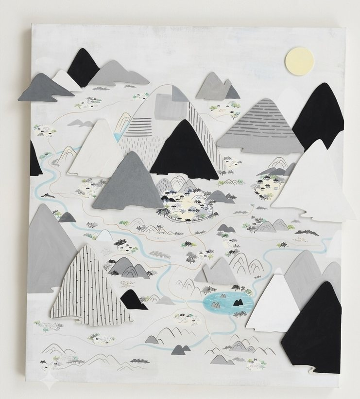

동양화론에 '와유(臥遊)'라는 말이 있다. 누워서 그림 속의 경관을 감상하며 즐겁게 노닌다는 뜻이다. 나는 '와유'에 쉰다는 뜻의 '휴'의 개념을 더하고 싶었다. 쉬는 것은 노니는 것과 달리 치유와 힐링을 구할 수 있는 여유가 있다. 노니는 것은 어느 것에도 구애받지 않는 자유와 즐거움이 있다.
나는 쉬고 노니는 공간을 산수화에 담고 싶었다. 내 그림을 보는 감상자에게 자유롭고 편안한 마음의 풍경을 제공하고 싶었다. 이러한 생각을 '휴유산수' 네 글자로 함축하였다. 나의 시선은 현실의 산수풍경으로 나를 이끌지만, 궁극적으로는 시각도 시선도 아닌 마음에 머무는 풍경이다. 산수는 나에게 평온함과 안락함, 그리고 치유의 시간이자 창작으로 나아가게 하는 힘이다. 눈으로 보고, 마음으로 느낀 영감을 그리고 또 다른 여정과 조형의 세계로 이끌어주는 단서이다.
먹으로 그린 흑백의 모노톤은 나에게 늘 새로운 영감의 원천이다. 휴식과 안락을 찾아 이곳저곳을 여행하며 느끼는 감정들을 형상과 색으로 표현하였다.
나의 그림에는 몇 가지 중요한 요소가 있다. 그것은 산속에 그려진 패턴과 기와, 그리고 빈 배이다. 산속에 그려진 패턴은 숲과 다양한 식물들, 논과 밭, 길 등을 표현한 것이며, 기와는 향수(鄕愁)와 같은 포근함이다. 산이나 관광지를 가면 옛 기와들이 많이 있는데 자연과 어우러진 기와를 보고 있으면 마음의 안식처처럼 편안하다. 화려하지도 않고 예쁘지도 않은 무척 투박해 보이는 배는 누구의 시선도 신경쓰지 않고 오직 나만의 길을 가겠다는 메시지를 담고 있다.
강을 따라, 혹은 바다를 향해 목적 없이 빈 배를 타고 나는 또 어디론가 향한다.
 별천지 Ⅱ別天地100×200cm · 장지에 혼합기법
별천지 Ⅱ別天地100×200cm · 장지에 혼합기법
무릉계곡武陵溪谷60×80cm · 장지에 채색
서울의 봄120×120cm · 장지에 채색
봉정암鳳頂庵50×50cm · 장지에 채색
무릉도원武陵桃源50×100cm · 장지에 채색 경포호鏡浦湖40×40cm · 장지에 채색
경포호鏡浦湖40×40cm · 장지에 채색
보물섬50×70cm · 장지에 채색
숨바꼭질90×54cm · 장지에 채색
休遊여행각 25×25cm · 장지에 채색 산려소요각 40×40cm · 장지에 채색
산려소요각 40×40cm · 장지에 채색 신세계新世界각 25×25cm · 장지에 채색
신세계新世界각 25×25cm · 장지에 채색
강산유람江山遊覽각 30×30cm · 장지에 채색- 기간
- 2026. 10. 14 (수) – 10. 19 (월)
- 관람시간
- 10:00 – 18:00
- 휴관
- 휴관일 없음
- 장소
- 인사아트센터 3층 제1특별관